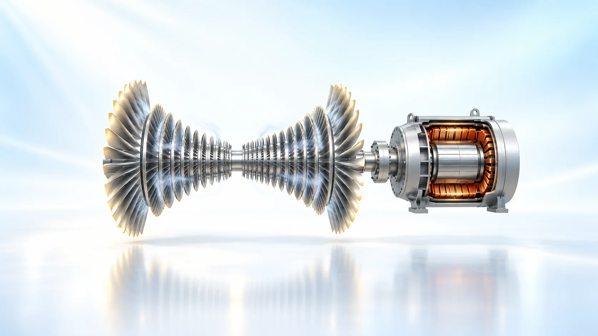
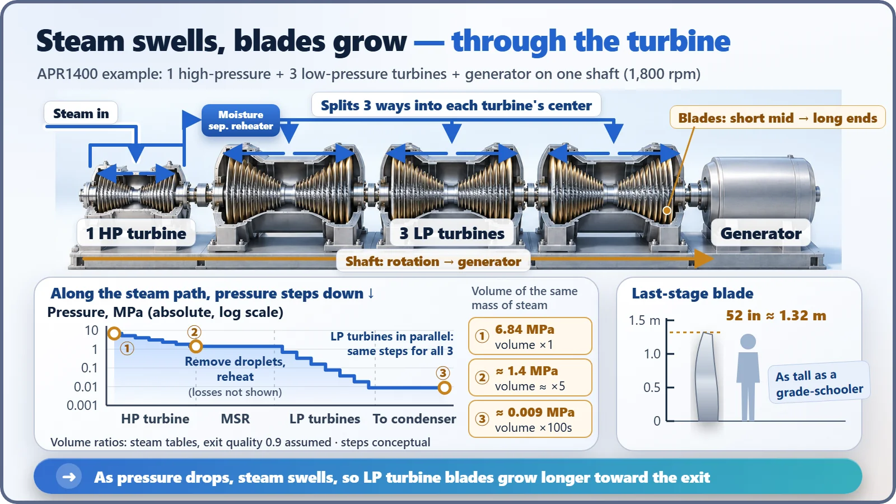
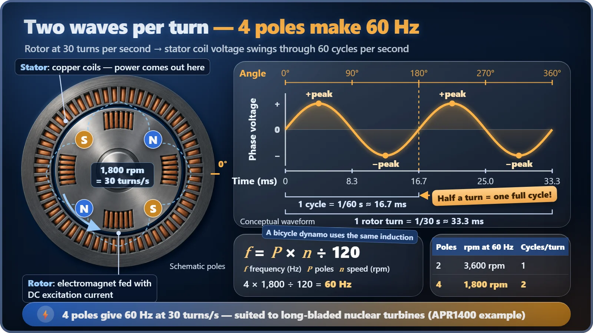

Plant Operation, Control & the Grid · 233
A Pinwheel and a Bike Light on One Shaft — How a Turbine Generator Makes Electricity
A row of pinwheels and a bicycle dynamo on one shaft: the machine that turns a nuclear plant's steam into 60 Hz electricity.

A reactor only makes steam; the turbine generator turns it into electricity. Steam swells as it loses pressure across dozens of blade stages, which is why the last blades are the longest, and on the same shaft a spinning electromagnet induces alternating current in fixed copper coils. With 4 poles, 30 turns a second gives exactly 60 Hz. [1]
A bike light on your kitchen floor
All you need is a bicycle with a dynamo, the little generator that spins against the wheel and powers the headlight. Turn the bike upside down and crank the pedals slowly. The headlight flickers dimly. Crank a bit harder? The light gets brighter and the flicker speeds up.
Congratulations. You've just reproduced the last step of a nuclear power plant by hand. The giant machine a plant spins at 30 revolutions every second, the turbine generator, makes electricity on the same principle as this experiment.
The reactor only boils water; the electricity comes from here
Let's clear up one misconception first. A reactor doesn't make electricity directly. Its job ends at turning fission heat into steam. The machine that takes that steam and turns it into electricity is the turbine generator.
As the name says, it's two parts joined on one shaft. The turbine uses the force of the steam to spin the shaft, and the generator turns that rotation into electricity. Think of the turbine as a pinwheel and the generator as a bicycle dynamo.
The more the breath spreads, the bigger the pinwheel must be
Ever spun a pinwheel by blowing on it? Inside a turbine, rows of blades like that are lined up dozens deep. Stationary blades fixed to the casing act like narrow passages that speed the steam up and turn it, and moving blades attached to the shaft get pushed around as they bend that flow. One pair of stationary and moving blades is a "stage", and each time the steam passes a stage its pressure drops a little and it hands that much energy to the shaft. [2]
The interesting part is the steam's volume, because steam swells hugely as its pressure falls. Working it out with steam tables, the same amount of steam grows about 5 times in volume between the high-pressure turbine inlet (about 6.8 MPa) and its outlet (about 1.4 MPa), and by the end of the low-pressure turbines it has swollen to hundreds of times. Just as spreading breath needs a bigger pinwheel, swollen steam needs bigger passages and bigger blades to get through. That's why turbine blades are short where the steam comes in and long where it leaves. [3]
Take the APR1400, South Korea's newest reactor design. One high-pressure turbine and three low-pressure turbines line up on a single shaft. The steam doesn't flow along the shaft in a single file, though. Steam leaving the high-pressure turbine splits three ways, enters the middle of each of the three low-pressure turbines, and spreads out toward both ends inside each one. The outermost last-stage blades are 52 inches long, about 1.32 m. Picture a blade as tall as a grade-schooler spinning 30 times a second. [2]
Between the high- and low-pressure sections sits a device called the moisture separator reheater. Nuclear steam is cooler than steam in fossil plants, so after the high-pressure turbine it carries tiny water droplets. Those droplets slowly wear away the fast-moving blades they hit, so they are filtered out and the steam is reheated before going on to the low-pressure turbines. [2]

A spinning magnet, a standing coil
Now to the end of the shaft: the generator. The principle is electromagnetic induction, discovered by Faraday in the 19th century: when the magnetic field passing through a coil changes, a voltage appears in the coil. [1]
The rotor spinning at the center of the generator is a huge electromagnet. Feeding it direct current to make it magnetic is called excitation. Surrounding it is the stator, a ring of copper coil bundles. As the rotor turns, north and south poles take turns sweeping past the stator coils. The field direction keeps flipping, so the voltage swings between plus and minus: alternating current. One surprise is that the electricity is drawn not from the spinning rotor but from the stationary stator.
Unlike a bicycle dynamo, the strength of the magnet can be adjusted. A dynamo uses a permanent magnet, but a power plant rotor is an electromagnet, so the excitation current is adjusted to set the voltage. The APR1400 generator delivers a rated 1,425 MW at about 24 kV. [2]
That doesn't mean electricity comes for free. The more power is drawn, the more the magnetic field from the stator current holds the rotor back. It's like the pedals getting slightly heavier when you switch on the bike light. So to keep the same speed, more steam has to go in.
That leads to a common misconception: "To make more electricity, just spin it faster, right?" True for a bicycle, but a generator tied to the power grid is different. Its speed is locked to the grid's beat and hardly changes. To raise output, you increase not the speed but the force. Open the control valves at the turbine inlet to let in more steam, the push on the blades grows, and the generator sends out more power. It's like pedaling at the same pace while towing a heavier load.
Why exactly 1,800 revolutions a minute?
South Korea's electricity is 60 Hz alternating current, which changes direction 60 times a second. The generator has to turn in exact step with that beat, and speed and frequency are tied together like this:
Frequency (Hz) = number of poles × revolutions per minute ÷ 120
With 2 poles (one north-south pair), the voltage swings once per turn, so making 60 Hz takes 3,600 rpm. With 4 poles it swings twice per turn, so 1,800 rpm, or 30 turns a second, is enough. [1]

There's a reason nuclear plants choose 4 poles and 1,800 rpm. As we saw, the low-pressure turbine blades are very long. The centrifugal load on a spinning object rises roughly with the square of its speed, so for the same blade, halving the speed cuts the strain to about a quarter. Spinning slower is the choice that lets long blades turn safely. Large fossil-plant turbines commonly run at 3,600 rpm, so the slower nuclear turbine isn't old-fashioned; it's a design choice.
Speed control is tied to safety, too. If the connection to the grid is suddenly lost, the turbine can spin freely and speed up. The APR1400 has independent mechanical and electrical overspeed protection that cuts off the steam and stops the turbine at about 110% of rated speed. [2]
One row of pinwheels, one dynamo
In short, a turbine generator is one body: a turbine that expands steam over many stages to push the blades and spin the shaft, and a generator at the end of that shaft where a spinning electromagnet induces alternating current in fixed coils. The deal between magnet and coil is exactly the same as in a bike light. The blades are just as tall as a child, the magnet turns 30 times a second, and that beat is the 60 Hz at the outlet in your home.